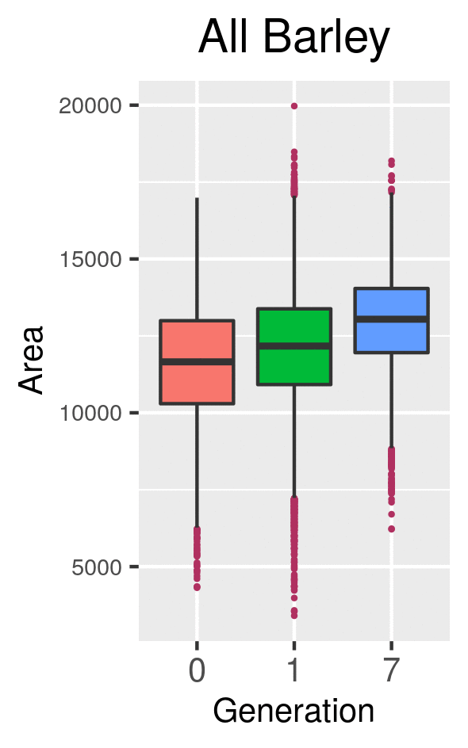
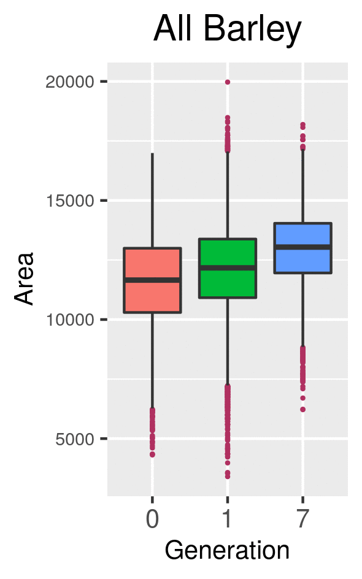
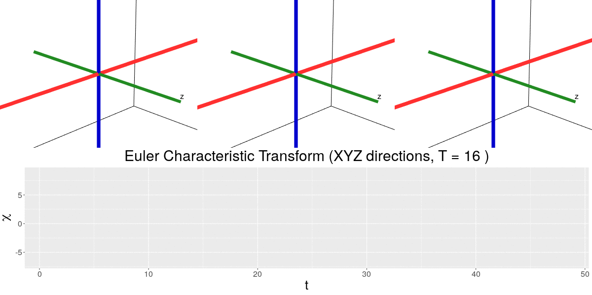

Using topology to analyze the shape of barley


Using topology to analyze the shape of barley

1 Computational Math, Science & Engineering, Michigan State University
2 Horticulture, Michigan State University
3 Botany and Plant Sciences, University of California, Riverside


 

This work is supported in part by Michigan State University and the National Science Foundation Research Traineeship Program (DGE-1828149).
[1] K. Turner, S. Mukherjee, and D. M. Boyer, “Persistent homology transform for modeling shapes and surfaces,” Information and Inference, vol. 3, no. 4, pp. 310–344, Dec. 2014.
\[\chi = \#(\text{Vertices}) - \#(\text{Edges}) + \#(\text{Faces})\]
